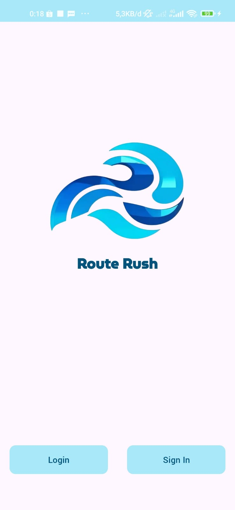

Selected Work
Systems that connect infrastructure to the people who monitor it.

FTTH Network Monitoring with GIS
2026Undergraduate thesis — a real-time fiber-to-the-home monitoring system for an ISP, syncing SNMP data from Zabbix into an interactive map dashboard with automated Telegram fault alerts.
Golang
ReactJS
Leaflet.js
Zabbix
AWS
WireGuard
View project ↗

RouteRush
2024Bangkit capstone — a mobile app that optimizes multi-stop delivery routes with ML inference, served through Node.js APIs on a Cloud Run+Cloud Build CI/CD pipeline.
Node.js
Google Cloud
Cloud Run
MySQL
Docker
View project ↗